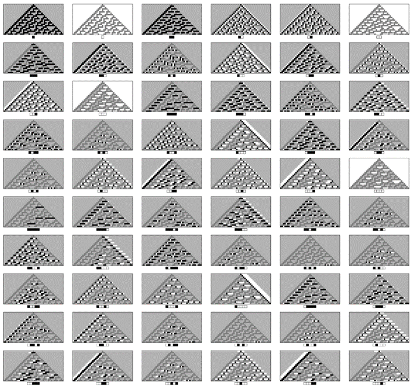

12.3 原则的内容
与科学中的许多其他基本原则一样，计算等价性原则可以部分地被视为一条新的自然法则，部分地被视为一个抽象事实，部分地被视为一个定义。因为从某种意义上说，它告诉我们哪些类型的计算可以在我们的宇宙中发生，哪些不能，但它也总结了关于可能计算的纯粹抽象推论，并为计算概念的更一般定义提供了基础。
如果没有计算等价性原则，人们可能会认为不同的系统总是能够执行完全不同的计算，特别是具有足够复杂结构的系统能够执行的计算的复杂度没有上限。
(p 719)
但上一章关于通用性的讨论已经表明，情况并非如此。因为它意味着，至少在我们上一章所考虑的系统类型中，实际上存在可以执行的计算的复杂度的上限。
因为正如我们所讨论的，一旦你拥有了一个通用系统，这样的系统就可以模拟我们考虑过的任何类型的系统——甚至包括那些结构比它本身更复杂的系统。所以这意味着，无论通用系统能执行哪些类型的计算，其他系统都永远无法执行任何更高复杂度的计算。
因此，将计算定义为正是上一章我们所讨论的通用系统能够执行的东西，这在很多情况下看起来是合理的。
但尽管如此，在抽象层面上，人们总是可以想象存在能够执行超出上一章所述元胞自动机、图灵机或其他类型系统能力的计算的系统。因为一旦确定了任何这样的计算类别，人们就可以想象建立一个包含其结果的无限表的系统。
但尽管人们可以很好地想象出这样的系统，但计算等价性原则却断言，在我们的实际宇宙中，这样的系统实际上是不可能被构造出来的。
因此，从本质上讲，计算等价性原则引入了一条新的自然法则，即没有任何系统能够执行比元胞自动机和图灵机等系统执行的更复杂的显式计算。
那么，是什么让人们认为这是真的呢？一个重要的证据是我在这本书中基于元胞自动机等系统讨论的自然系统模型的成功。但尽管有这些成功，人们仍然可以想象自然界中存在其他系统，比如基于连续数学的系统，它们允许执行比元胞自动机等系统更复杂的计算。
毫无疑问，我不相信这是事实，而事实上，如果人们能够找到像我在第9章中讨论的那样一个真正的基础物理学理论，那么就有可能完全确定地证明这一点。因为这样的理论将具有这样的特点：它可以被我上一章所讨论的通用系统所模拟——结果是我们宇宙中的任何计算都不可能比我们所讨论的通用系统执行的计算更复杂。
(p 720)
那么我们在计算机或大脑中抽象地执行的计算呢？这些计算可能更复杂吗？显然不能，至少如果我们想要实际结果，而不仅仅是泛泛之谈的话。因为如果计算要明确地执行，那么它最终必须作为一个物理过程来实现，因此必须受到与任何此类过程相同的限制。
但正如我在上一节中所讨论的，除了断言计算复杂度有上限之外，计算等价性原则还做出了一个更为有力的断言，即几乎所有不是明显简单的过程实际上都达到了这个上限。
这与我认为的一个非常基本的抽象事实有关：在所有可能的行为不是明显简单的系统中，绝大多数都是通用的。
那么要证明这一事实需要做什么呢？
人们可以想象像我在这本书开头所做的那样，依次查看像元胞自动机这样的某种系统的每一个可能的规则。如果这样做，人们会发现许多规则表现出明显简单的重复或嵌套行为。但正如我在这本书开头所发现的那样，也有很多规则并不这样，而是表现出往往复杂得多的行为。
计算等价性原则随后断言的是，这类规则中的绝大多数都将是通用的。
如果从头开始，那么构造通用的规则（尽管通常相当复杂）并不是特别困难。并且从上一章的结果来看，规则110是通用的，那么例如，包含这个规则的任何规则也必须是通用的。但是，如果仅仅给出一个任意规则——尤其是简单的规则——那么确定该规则是否是通用的可能会极其困难。
(p 721)
正如我们在上一章所讨论的，证明一个规则是通用的通常方法是找到一个设置初始条件和解码输出的方案，使该规则能够模拟其他已知是通用的规则。
但问题是，在任何特定情况下，这样一个方案的复杂性几乎没有限制。事实上，唯一的限制是，该方案本身在设置初始条件和解码输出时不应表现出通用性。
实际上，该方案至少在一定程度上会相当复杂，这几乎是不可避免的：因为如果一个系统要是通用的，那么它必须能够模拟其他大量已知的通用系统——结果是，为了证明的目的，指定它将模拟哪个特定的系统通常需要提供相当多的信息，这些信息都必须是编码方案的一部分。
证明一个系统不是通用的，往往比证明它是通用的还要困难。因为需要证明的是，无法设计出任何可能的方案来使该系统模拟任何其他通用系统。而通常，要确定这一点，唯一的方法就是对系统可能表现出的所有可能行为进行或多或少完整的分析。
如果这种行为总是具有明显的重复性或嵌套形式，那么分析起来通常会相当直接。但正如我们在第10章中所看到的，在几乎其他所有情况下，标准的感知和分析方法都无法让人取得多少进展。
然而，正如第10章所提到的，我确实知道一些基于数字的系统，即使其整体行为不是重复的、嵌套的或其他明显简单的形式，也可以进行相当完整的分析。毫无疑问，这样的例子确实存在。但我坚信——正如计算等价性原则所体现的——最终，行为不是明显简单的系统绝大多数都会是通用的。
(p 722)
如果有人试图使用某种系统的程序来测试系统是否是通用的，那么不可避免地会有三种结果。有时该程序会成功地证明一个系统是通用的，有时则会证明它不是。但很多时候，即使付出了大量努力，该程序也无法得出明确的结论。
然而，在几乎所有这样的情况下，计算等价性原则都断言这些系统实际上是通用的。虽然几乎可以肯定的是，在很大程度上证明这一点永远不会容易，但我的猜测是，随着时间的推移，越来越多的具体规则最终将被证明具有通用性。
但是，即使人们确信了一个抽象事实，即在所有可能产生非明显简单行为的规则中，绝大多数都是通用的，这仍然不足以确立计算等价性原则所断言的，即在自然界和其他地方出现的这类规则几乎都是通用的。
因为仍然可能是这样：出现的特定规则以某种方式被特别挑选出来，以使其不具有通用性。而且，确实存在各种情况，其中的规则被限制为表现出过于简单的行为，以至于无法支持通用性。例如，在大多数工程领域中，人们倾向于选择行为足够简单的规则，以便能够轻易地预测它们。正如我在第8章中所讨论的，生物学中由自然选择决定的规则似乎也发生了类似的情况。
但是，当没有约束迫使整体行为简单时，我猜想自然界中出现的大多数规则都可以被视为以非特殊方式被选择的——除了规则本身的结构往往相当简单这一事实之外。
这意味着这类规则通常将表现出与从所有可能性中随机选择的规则相同的特征——其结果是，在它们的整体行为不是明显简单的情况下，它们几乎都会在最终表现出通用性。
但是，即使能够证明广泛的系统确实是通用的，这仍然不足以确立完整的计算等价性原则。因为计算等价性原则不仅关注完整系统的计算复杂性，还关注系统内发生的特定过程的计算复杂性。
(p 723)
当说一个特定系统是通用的时，意思是通过选择适当的初始条件，可以使系统执行本质上任何复杂程度的计算。但这并不能保证绝大多数初始条件——包括可能在自然界中轻易出现的那些——不会仅仅产生与非常简单计算相对应的行为。
事实上，在上一章中证明规则110的通用性时，使用了极其复杂的初始条件来执行甚至相当简单的计算。
但计算等价性原则断言，实际上，即使是从简单的初始条件出发，几乎所有不是明显简单的行为最终都会对应于具有相当复杂性的计算。
本书中确实有各种各样的图示支持这一观点。我们一次又一次地看到，简单的初始条件足以产生极其复杂的行为，而且使初始条件变得更复杂通常并不会导致看起来有任何不同的行为。
正如对面页面上的图示所示，这种情况的部分原因往往在于，即使只有一个非常简单的初始条件，系统的实际演化也会生成与几乎所有可能的初始条件相对应的块。这意味着，在给定的整体初始条件下会观察到的任何行为，也会在由特定初始条件生成的单一模式中的适当位置观察到相同的行为。
这表明，在单个模式中实现类似于通用性的方法，而不是在整个系统中实现。这个想法是，一个通用的模式可以作为一种可能的计算目录，模式中的不同区域给出所有可能的不同初始条件下的结果。
(p 724)
作为一个简单的例子，可以想象一个在三维数组上展开的模式，其中每个连续的垂直平面都给出了某个一维通用系统从其连续可能的初始条件之一的演化。有了这样的设置，无论计算的复杂程度如何，都必须在模式的某个地方出现。

从单个黑色单元格开始，由规则30生成的模式中，逐渐出现更长的块。据我所知，所有可能的块最终都会出现，这可能会使该模式成为一种所有可能计算的目录。
(p 725)
在像上面由规则30得到的模式这样的模式中，不同的计算可能不是以如此直接的方式排列的。但我强烈怀疑，尽管找到想要的特定计算可能相当不切实际，但基本上任何可能的计算都会在模式的某个地方存在。
然而，与完整系统的通用性情况类似，计算等价性原则并不仅仅指出在某个像规则30这样的系统产生的模式中，某个地方会找到复杂的计算。相反，它断言，除非它显然是简单的，否则人们看到的任何行为都应该对应于具有相当复杂性的计算。
从某种意义上说，这可以被视为提供了一种定义计算概念的新方法。因为它意味着，我们看到的任何复杂的行为片段，在某种层面上，都对应于一种等价的计算块。
这有点像热力学中发生的情况，在那里，各种复杂的微观运动都被以某种统一的方式识别为与热量的概念相对应。
但计算是一个比热量更广泛、更强大的概念。因此，计算等价性原则比热力学定律——或者科学中任何单一的定律集合——具有更丰富的含义。